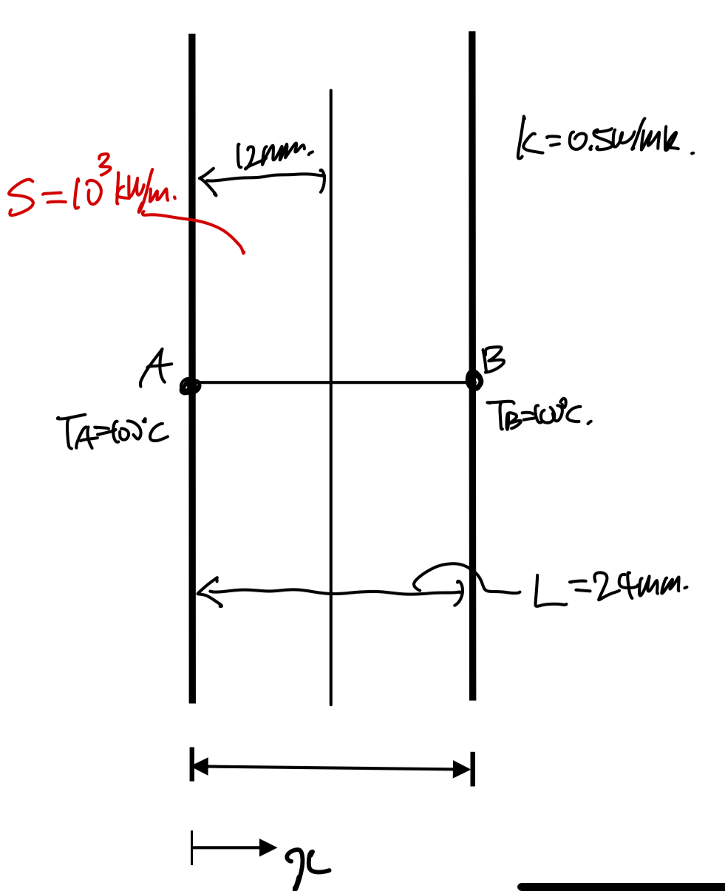
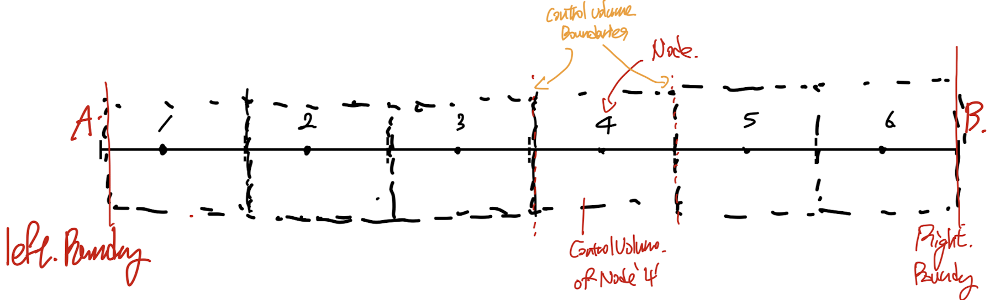
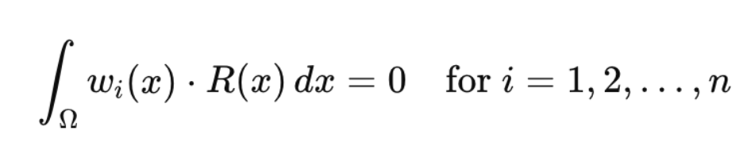
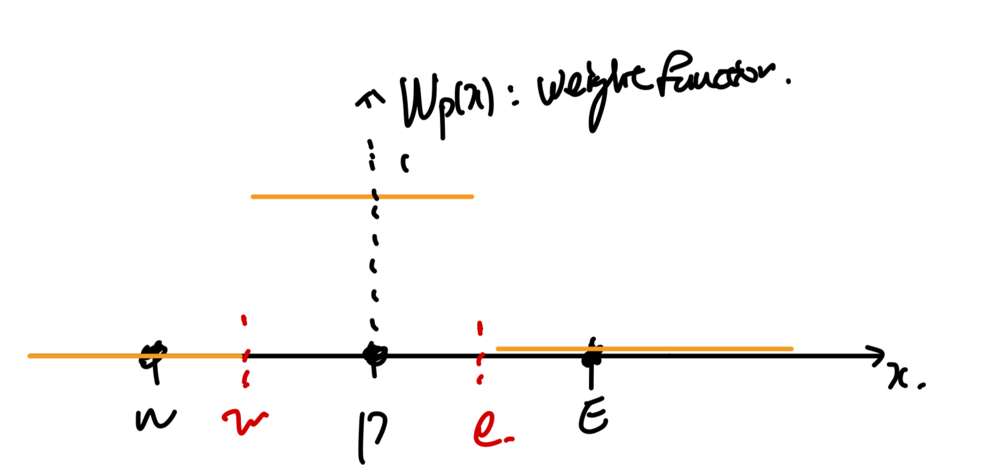
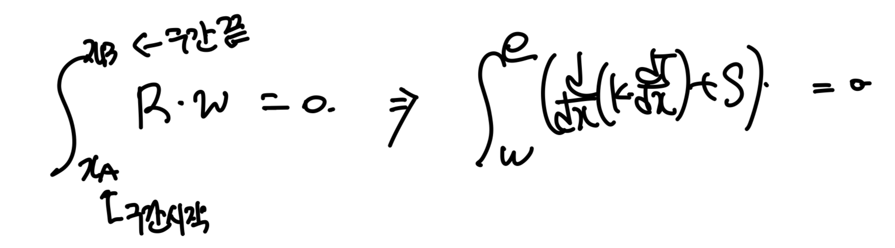
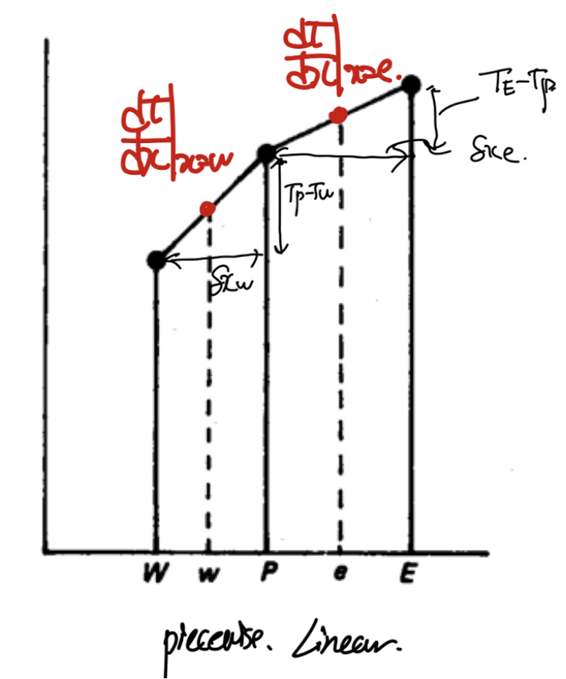
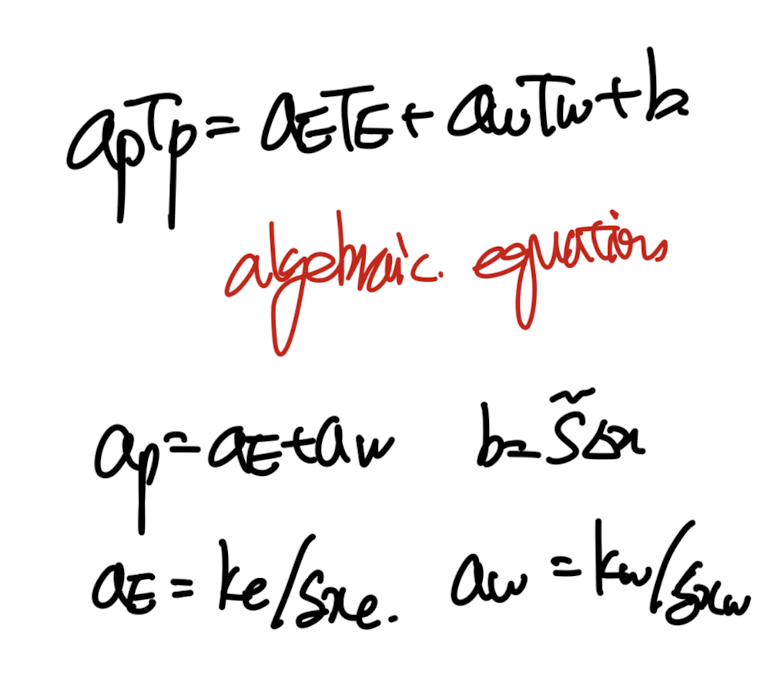
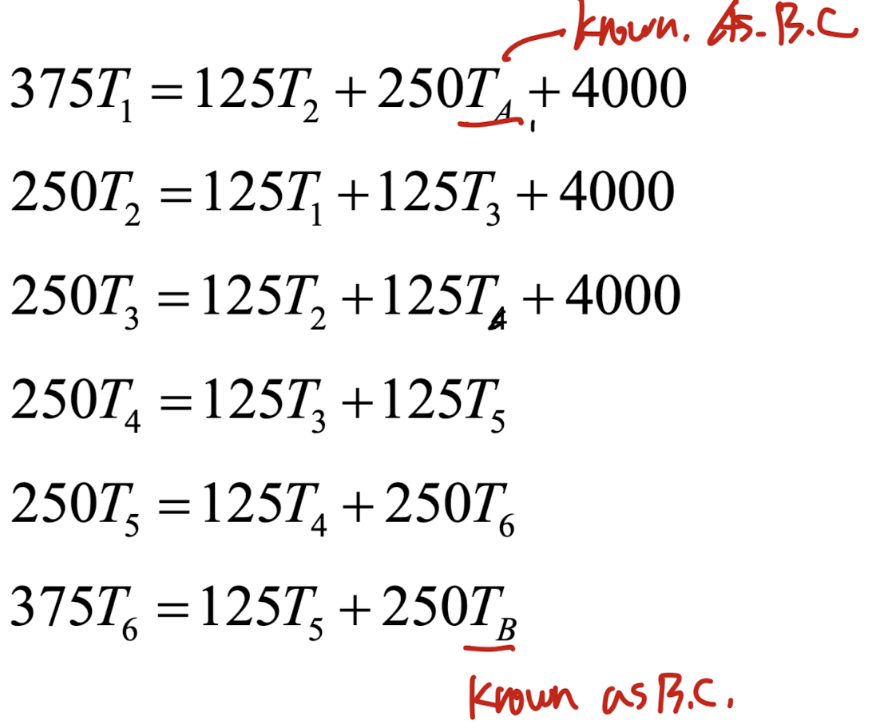
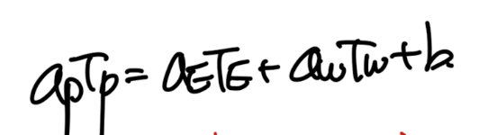

---
{
"layout": "note",
"title": "Ch3 Discretization method - summary",
"journal": true,
"section": "Study",
"topic": "Computational Fluid Dynamics",
"excerpt": "정리를 하다가 sumamry 가 너무 길어져서 따로 블로그 글을 씁니다. 근데 최대한 그림으로 압축적으로 지금까지 한 과정들을 쭉 살펴볼께요. 우리의 목표: \"어떠한 물리법칙이 반영된 differential Eq 을 만족하는, dom",
"classes": "wide",
"permalink": "/blog/mechanical-engineering/computational-fluid-dynamics/ch3-discretization-method-summary/",
"study_area": "Mechanical",
"date": "2025-04-15",
"source_url": "https://jeffdissel.tistory.com/183",
"header": {
"teaser": "/blog/mechanical-engineering/computational-fluid-dynamics/ch3-discretization-method-summary/images/img-001.jpg"
}
}
---
{% raw %}Summary
정리를 하다가 sumamry 가 너무 길어져서 따로 블로그 글을 씁니다.
근데 최대한 그림으로 압축적으로 지금까지 한 과정들을 쭉 살펴볼께요.
우리의 목표:
"어떠한
물리법칙이 반영된 differential Eq
을 만족하는,
domain of interest 내부의
원하는 솔루션
을 찾는다"
말이 복잡하므로, 밑의 예시를 보면, 목표는
"현재 상황(조건)에 대해서 A,B점 사이에 있는 물체의 온도를 x방향에 따라 구하는 것"
물리법칙이 반영된 방정식 : 열 미분 방정식
domain of interest: x = (A,B) 점 AB사이
원하는 솔루션 :Temperature Distribution

4가지 순서로 위 문제를 푼다.
(computational analysis의 경우)
1. Discretize the domain that we wanna solve.

수많은 cv으로 관심영역을 이분화 시킨다.
2. Integral the differential eq in each Control volume.
(컴퓨터가 풀기위해서는)
Differential Eq -> algebraic Eq 해야한다.
전환하는 방법 = (FVM, FEM, FVM)
우리가 사용할 방법: FVM
Method of Weight Residual
(when the weight function is step wise function)
위 방식은
풀어야 할 미분방정식에 weight function을 곱하고,
전체 영역으로 적분 = 0 즉, weak form 식을 세운다.

Method of Weight Residual
그리고 weight function은 우리가 이산화한
각 control volume마다 다르게 설정이 가능하므로,

Control volume of Node P 의 Weight function
노드 P의 control volume에 대해서 다음과 같이 식을 전환할 수 있다.

3. Choose Piecewise profile
위 식의 적분을 계산하면, 아직도 미분항 dT/dx를 of x = e, and x = w에서 구해야한다.
-> which means we need to select piece wise profile for the T(x)

profile설정방법은 가장 간단한 함수부터 시작(유저 마음대로 설정가능)
(x=e,w에서 우리가 원하는 계산값을 얻을 수 있는 선 안에서)
이제 미분항을 위 Profile로 계산하고 대입하면,

general form of the algebraic Eq.
점 P일때를 기준으로 세운 위식을 이제 우리가 이산화한 모든 CV에 대해서 계산하면

we make 6 control volume for the problme we trynna solve.
4. Check 4 Basic rules.
1. consistenct at the control surface.
2. positive coefficients
3. negatvie slope of the source term
4. Sum of the neighbor coefficients.
위 4가지를 모두 만족하는 algebraic eq이라면,
이제 physically realstic하게 전환시켰다고 할 수 있다.

{% endraw %}